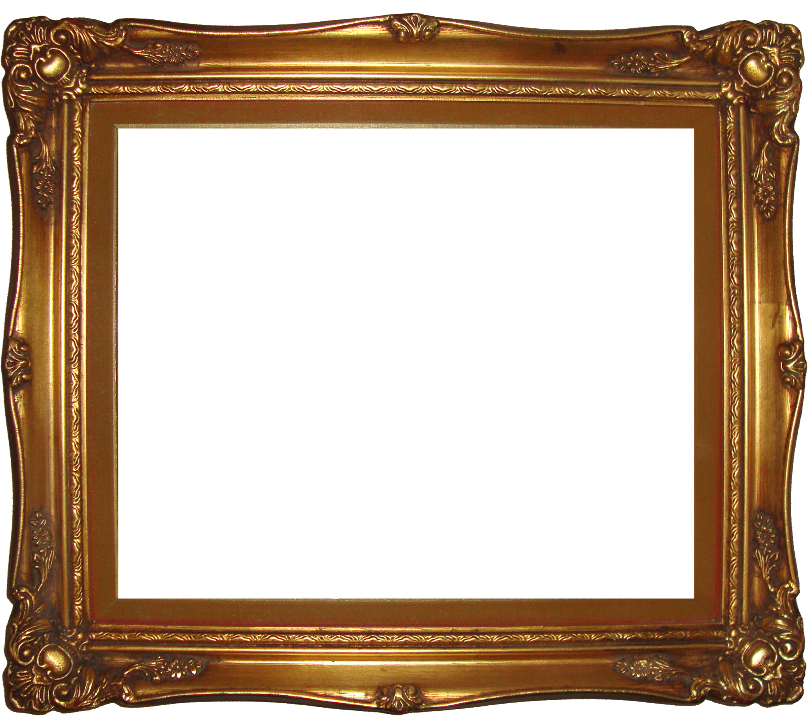

Your words appear here

Talkboard
Have you ever wanted to try and draw something using your voice? No? Well, you should. It'll be fun.
To start, press the Mic button and allow your browser permission to capture your voice. Time waits for no-one and neither does the Talkboard: as soon as you shout your first valid direction, a line will be continously drawn in that direction. Say another direction and the line will listen (if it feels like it).
Click the save icon in blue to save your picture
Valid Voice Commands:
- Up / North
- Northeast
- Right / East
- Southeast
- Down / South
- Southwest
- Left / West
- Northwest
- Stop / Done